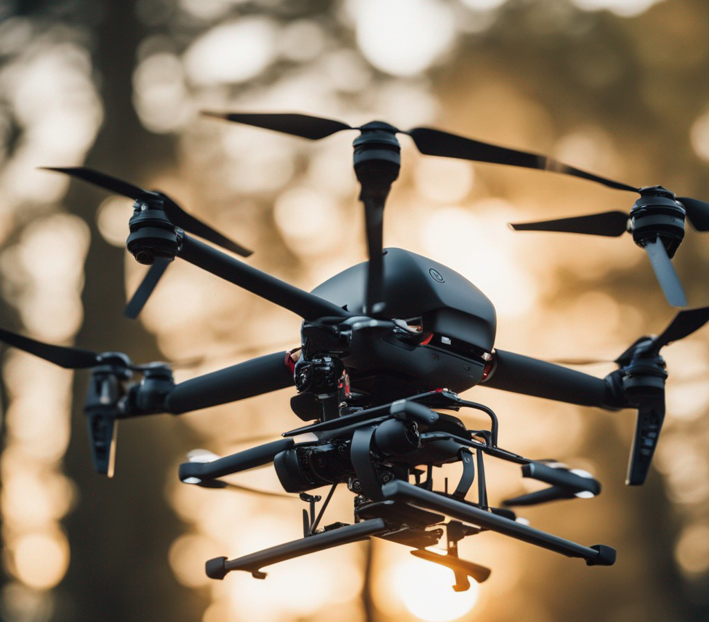

Drones Domésticos: As Asas da Inovação no Seu Lar
Os drones, anteriormente associados a atividades militares e de exploração espacial, têm conquistado cada vez mais espaço na utilização doméstica, trazendo consigo um leque de vantagens que revolucionam a forma como interagimos com o nosso lar. Esses pequenos e versáteis dispositivos têm se mostrado como verdadeiras asas da inovação, proporcionando experiências únicas e facilitando diversas tarefas do cotidiano.
1. Fotografia e Vídeo Aéreo: Talvez uma das aplicações mais populares dos drones domésticos seja a fotografia e a filmagem aérea. Com suas câmeras de alta resolução, eles nos permitem capturar imagens impressionantes de nossas casas, jardins e arredores, proporcionando ângulos únicos e perspectivas panorâmicas que antes eram privilégio de fotógrafos profissionais.
2. Monitoramento de Propriedades: Com um drone, é possível monitorar de forma remota a segurança de sua propriedade. Você pode inspecionar telhados, cercas e áreas de difícil acesso, identificar potenciais problemas ou verificar se tudo está em ordem mesmo quando estiver longe de casa.
3. Entregas e Compras Online: A utilização de drones para entregas e compras online tem se mostrado uma alternativa promissora para o futuro. Empresas têm desenvolvido sistemas de entrega por drones, permitindo que produtos sejam entregues com maior rapidez e eficiência, especialmente em áreas de difícil acesso ou em locais com tráfego intenso.
4. Diversão e Entretenimento: Pilotar um drone pode ser uma atividade divertida e empolgante para toda a família. Com diversos modelos disponíveis no mercado, é possível encontrar drones adequados para diferentes idades e níveis de habilidade. Além disso, algumas opções contam com recursos como realidade virtual, o que amplia ainda mais a experiência de diversão.
5. Agricultura e Monitoramento Ambiental: Na área rural, os drones têm sido usados para monitorar plantações, detectar pragas, avaliar a qualidade do solo e otimizar processos agrícolas. Também são aplicados em projetos de monitoramento ambiental, auxiliando na preservação de ecossistemas e na identificação de possíveis problemas ambientais.
6. Inspeções e Manutenção: Os drones são especialmente úteis em atividades de inspeção e manutenção, permitindo que você avalie visualmente o estado de telhados, chaminés, antenas, painéis solares e outros elementos de difícil acesso, economizando tempo e evitando riscos para a segurança pessoal.
7. Mapeamento e Cartografia: Com a capacidade de capturar imagens em alta resolução de grandes áreas, os drones têm se tornado importantes ferramentas no mapeamento e cartografia, sendo utilizados para criar mapas precisos e atualizados de locais diversos.
Entretanto, é importante lembrar que o uso de drones deve ser feito com responsabilidade e em conformidade com as regulamentações locais. Além disso, é fundamental respeitar a privacidade de terceiros e evitar voos em áreas restritas ou perigosas.
Com o avanço da tecnologia e a popularização dos drones, esses pequenos dispositivos têm revolucionado o conceito de inovação em nossos lares, proporcionando uma infinidade de vantagens e novas possibilidades. Então, que tal alçar voo com essa tecnologia fascinante e descobrir as asas da inovação que os drones podem trazer para a sua vida doméstica?